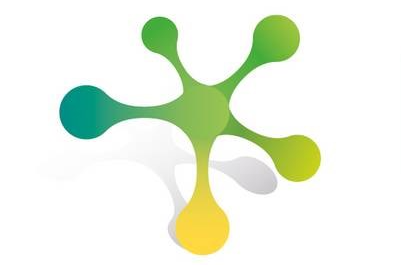
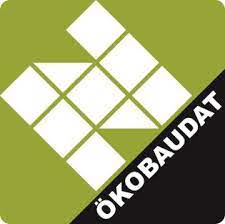
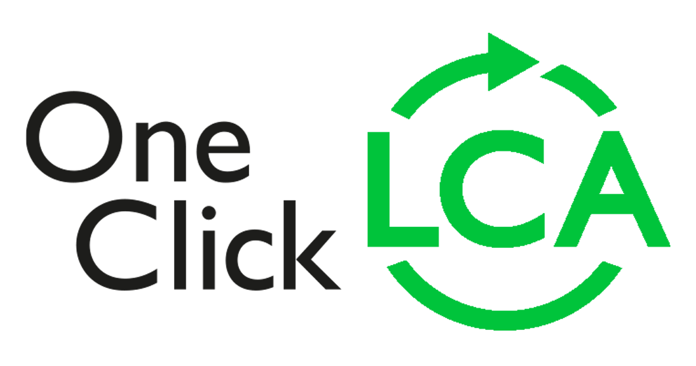

| Databasetype | Tilgængelige formater | Tilgængelige datatyper | Livscyklusfaser | Datakvalitet | Sortering og filtrering | Integration med andet software | API tilgængelig | API Licens | Pris | |||
|---|---|---|---|---|---|---|---|---|---|---|---|---|
| Eco Portal |
Søgeplatform | ILCD+EPD, CSV, PDF, HTML + gennem API: JSON, XML |
Specifik og generisk data | iflg. EN 15804 | Tredjepartverificeret | Ja | Programmatisk gennem API | Ja, REST API | Fri Software (AGPL) | Gratis | ||
|
Eco-portal er en søgeplatform for digitale miljøvaredata (EPD'er) lavet af
Eco-platform, i samarbejde med Open Database Network (InData). Databasen
samler
data fra en række nationale databaser (såkaldte "noder"), herunder INIES og
PEP ecopassport® (Frankrig),
The International EPD System (Sverige og international), IBU (Tyskland),
MRPI (Holland), EPD Norge, Bau-EPD (Østrig), EPD Italy, EPD
Danmark og andre. |
||||||||||||
| InData  |
Søgeplatform | ILCD+EPD, PDF, HTML | Specifik, generisk, repræsentativt og gennemsnitligt data | iflg. EN 15804 | Tredjepartverificeret + overensstemmelse med "InData Compliance Rules" | Ja | Nej | Nej | - | Gratis | ||
|
InData er en non-profit arbejdsgruppe, der har til formål at harmonisere
digital LCA- og EPD-data samt promovere åben, international udveksling af
dataet i ILCD+EPD-formatet og ved brug af open source software. |
||||||||||||
| ÖKOBAUDAT  |
National udbyder | ILCD+EPD, PDF, HTML + gennem API: JSON, CSV, XML |
Specifik, generisk, repræsentativt og gennemsnitligt data | iflg. EN 15804 | Tredjepartsverificeret + overensstemmelse med "Principles for acceptance of LCA data in ÖKOBAUDAT" | Ja | Programmatisk gennem API, eLCA | Ja, REST API | Fri Software (AGPL) | Gratis | ||
|
ÖKOBAUDAT platformen er udviklet til brug i miljøvurderinger af bygninger
fortaget af den tyske "Federal Ministry for Housing, Urban Development and
Building" (BMWSB), men bruges også ofte i Danmark. Den indeholder både
specifik data
fra programoperatører (kategori A), tredjepartsverificeret data, der ikke
blev genereret gennem et EPD-program (kategori B) og
generisk data (kategori C). |
||||||||||||
| ICE database |
Meta-database for indlejret CO2 | Excel (.xlsx) | Gennemsnitligt og metadata | Cradle-to-gate (modulerne A1-A3) | Baggrundsdata varierer i både metodologi, afgrænsning og datakvalitet. | Nej | Nej | Nej | - | Gratis | ||
|
ICE databasen blev fuldstændig genskabt i 2019. Nu er 88% af den baseret på
EPD'er der er i overensstemmelse med EN 15804. Baggrundsdata varierer i både
metodologi, afgrænsning (scope) og datakvalitet. Det kan både være
gennemsnitligt data baseret på mange EN 15804 EPD'er, eller data semantisk
udplukket fra litteraturen. Baggrundsdatabasen er proprietær (ikke
offentlig). |
||||||||||||
Inies France 
|
National udbyder | HTML, PDF + gennem API: XML |
Specifik og generisk data | Cradle-to-grave, inkl. brugsfaser | Tredjepartsverificeret. To nationale programmer; FDES* og PEP**. Begge er i overensstemmelse med EN 15804 og har yderligere krav. | Ja | Muligvis programmatisk gennem API | Ja, SOAP API tilgængelig med licens | Proprietær | Brug af hjemmesiden er gratis, adgang til API og andre funktioner kræver licens. | ||
|
* FDES (Fiche de Déclaration Environnementale et Sanitaire = Environmental
and
Health Declaration) er det franske svar på en EPD, med yderligere
informationer omkring produktets kemikalieudledning under brugsfasen både
til luften og til vandet,
indflydelse på indeklima (hygrotermisk, akustisk, visuel og olfaktorisk) og
funktionel enhed. |
||||||||||||
| One Click LCA  |
LCA-beregningsværktøj med integreret EPD-søgeplatform | Specifik og generisk data | For EU data: iflg. EN15804 og/eller ISO 14025 | Indeholder både selvdeklareret, maskinverificeret, internt verificeret og tredjepartsverificeret data | Ja | Revit, IESVE, IFC, ArchiCAD, gbXML, Tekla Structures, DesignBuilder, Excel | En "custom API" løsning er mulig | Proprietær | Tre licensniveauer, API er en ekstraydelse oveni | |||
|
One Click LCA har mange forskellige værktøjer og ydelser tilgængelig; bl.a.
et onlineværktøj til bygnings-LCA, indlejret CO2 værktøjer, LCC værktøj mm.
De listede programmer og formater har en form for integration med
bygnings-LCA værktøjet. Andre programmer som Tekla, Archicad og SketchUp kan
integreres gennem IFC- eller Excel-formatet.
|
||||||||||||
| Lcadatabase.com |
Søgeplatform | HTML. Muligvis mod betaling: ILCD+EPD, Excel, CSV og SimaPro-database | Specifik og generisk data | Ukendt | Ukendt | Ja | Nej | Nej | - | Ukendt | ||
|
lcadatabase.com hjemmesiden for projektet "Digital Environmental Hub for
Global Construction Products"./EDP_udbydere_tabel
Digital Environmental Hub for Global Construction Products består af flere
regionale databaser for hovedsageligt Europa, Tyrkiet og en global database.
|
||||||||||||